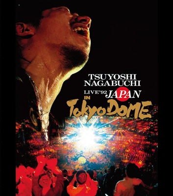

Day 48

長渕剛 ◆ '92 Live in Tokyo DOME ◆ 1992
很棒的现场，我是看网络小说的时候知道长渕刚的（《我的女友是声优》，不知道有人看过没www，挺好看的。小说里提到了「とんぼ」（《蜻蜓》），作者卷后语还提到了半夜听长渕刚）。他的LIVE听着眼泪就哗哗流，尤其到了「勇次」。我都不是日本人都这么感动，日本人听了不得泪流满面，不得了不得了～～
结尾的时候又很难过。但是只要不看那个结尾就没有感觉，好像演唱会的世界冻结了一样：随时可以回去。然而一旦看了结尾，就会实际感受到演唱会世界消失离去。
勇次
嫌になっちまった
腹が立っちまった
理由もなく 家を出たんだ
公衆電話から勇次に声をかけ
待ち合わせた 16の夜
ガソリンスタンドの 自動販売機で
缶ビールを開け 二人空をながめた
工場あとの 空地へ続く道で
タバコもみ消し 全てにつばを吐いた
※勇次 あの時の空を
忘れちゃいないかい
勇次 あの時の
エネルギッシュなお前が欲しい
帰りたい帰れない
青春と呼ばれた日々に
戻りたい戻れない
狭間で叫ぶ俺がここに居る※
裏通りのシアター
疲れ果てたダンサー
奴がもたれた レンガの壁に
しみついた汗の 匂いは10年前の
"勇次"お前を 想い出させてくれた
俺たちのプレイグランドに
引いたあの時のライン
6秒のフラットで 走るつもりでいたんだ
撃鉄がおとされ
俺たちは駆けぬけた
人生という 見えないゴールへ向かって
（※くりかえし）
来源：J-lyric
变的厌烦起来
变的火大起来
并无理由地离家出走了
在公用电话亭里叫了勇次
相约出来见面 16岁的夜晚
在加油站的自动贩卖机旁
打开啤酒罐 两人仰望着天空
在工厂的后面 通向空地的道路
灭了烟头 吐了口唾沫
※勇次 那时候的天空
没有忘记吧
勇次 那时候
想要充满活力的你
想要回去 却回不去
回到那被称作青春的岁月里
想要回来 却回不来
在夹缝中呼喊着的我就在这儿※
胡同里的剧场
精疲力尽的舞者
那些家伙依靠着的砖瓦墙上
渗透其中的汗水味
勇次 让我想起十年前的你
在我们玩耍的地方
那时候画在地上的线
当时是想着六秒整跑完的啊
在扳机扣下的那刻
我们奔跑了出去
朝着那名为人生 看不见的终点
（※重复）
来源：歌曲翻译
とんぼ
コツコツとアスファルトに刻む
足音を踏みしめるたびに
俺は俺で在り続けたい そう愿った
裏腹な心たちが见えて
やりきれない夜を数え
のがれられない暗の中で
今日も眠ったふりをする
死にたいくらいに憧れた
花の都 「大東京」
薄っぺらのボストンバッグ
北へ北へ向かった
ざらついたにがい砂を噛むと
ねじふせられた正直さが
今ごろになってやけに骨身にしみる
※ああ～しあわせのとんぼよ どこへ
お前はどこへ飞んで行く
ああ～しあわせのとんぼが ほら
舌を出して 笑ってらあ※
明日からまた冬の风が
横っつらを吹き抜けて行く
それでもおめおめと生きぬく
俺を耻らう
裸足のまんまじゃ
寒くて凍りつくような夜を数え
だけど俺はこの街を愛し
そしてこの街を憎んだ
死にたいくらいに憧れた
東京のバカヤローが
知らん顔して黙ったまま
突っ立ってる
ケツの座りの悪い都会で
憤りの酒をたらせば
半端な俺の骨身にしみる
（※くりかえし）
（※くりかえし）
来源：lilisonsama
每次我咯噔咯噔地
用力踩着柏油马路
我的愿望只是想靠我自己继续存在
看着那些口是心非
还有数不清的黑夜
在无法逃避的黑暗里
我今天也假装睡去
我对花之都 大东京
憧憬得要死
我拎着单薄的旅行袋
一直向北向北
咀嚼着粗糙苦涩的沙尘
我的正直心被现实按倒在地
现如今浸透骨髓
※啊~幸福的蜻蜓
你要飞往哪里？
啊~幸福的蜻蜓
正伸出舌头 笑着
从明天起又有冬日寒风
吹向我的脸颊
即使那样 即使它们羞辱着我
我也会毫不介意的坚持活下去
我赤着脚
数着寒冷而结冰的夜晚
但我爱着这城市
也恨着这城市
我是个对东京向往的
向往得要死的大笨蛋
我只是漠然的
默默呆立着
在不能缺席的大都市
假如愤怒之酒流淌出来
就会浸透我这个傻瓜的骨髓
（※反复）
（※反复）
来源：lilisonsama